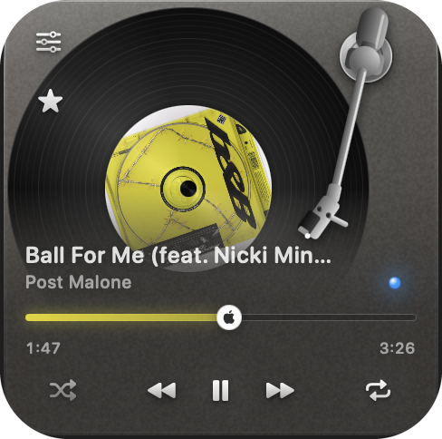
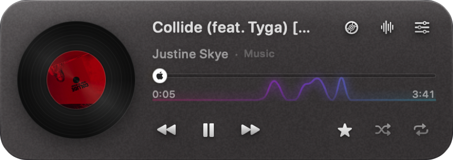
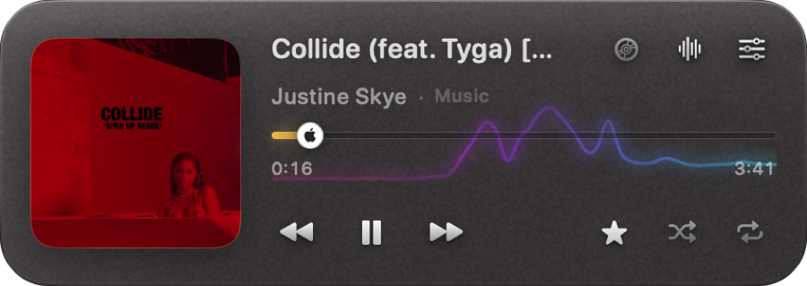
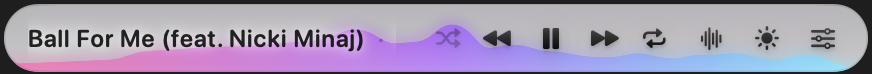
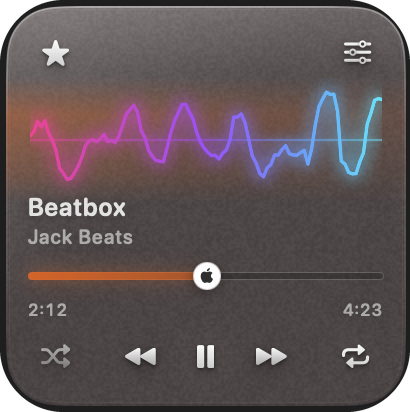
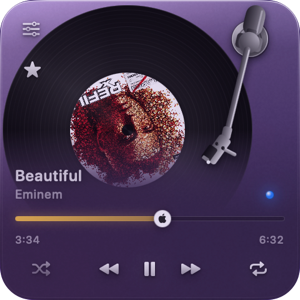
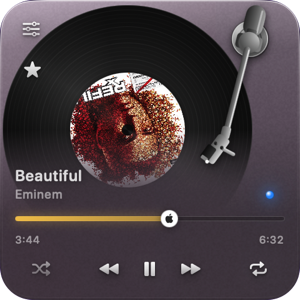
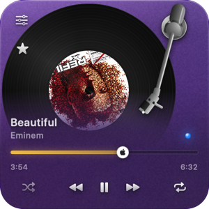
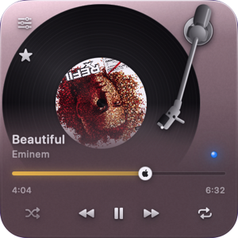

Your music.
On your desktop.
Your way.
GlassDeck is a floating Now Playing widget for macOS that lets you see, control and customize whatever you’re already listening to — without hunting for the right app or browser tab.

Beautiful.
Yours.⌁
One widget. Four ways to make it yours.
Choose your shape, then make it yours with different themes, visualizers and live customization.

Full
Everything at once: album art or a turning record, track info, a draggable scrubber, every control, and the spectrum running behind it all.
428 × 152See all features →Control your music without finding it first.
Play, pause, skip, scrub, shuffle, repeat and favourite where your music source supports it. GlassDeck stays in reach while the player itself can stay buried in another app or browser tab.
Always know where the sound is coming from. The widget shows the icon of whatever is actually playing, whether that is a desktop app or a tab you forgot about. Click it and you are taken straight there: the app comes forward, and in a browser the right tab is selected first.
View compatibility
It doesn’t fake the beat.
A real spectrum, drawn from the audio your Mac is already playing.

Bars · Mirror · Line · Ribbon · Wave · Dots
Glass that actually behaves like glass.
Tune frost, translucency, tint, sheen, grain, corner radius and more — live, with no apply button.

Make it subtle. Or make it yours.
Let the tint follow the current artwork, dial in exactly how frosted the panel feels, or switch instantly between four curated presets.

ClearBarely there
FrostedSoft and milky
SmokeFor busy desktops
AuroraThin glass, heavy colourWorks best where macOS gives it something to work with.
Compatibility varies by player. GlassDeck tells the truth about that instead of pretending every source exposes the same controls.
Best experience
Apple Music, Spotify, and your own files through Swinsian or VOX. Full metadata and controls where the app exposes them.
Full browser control
Chrome, Brave, Edge, Vivaldi and Safari after enabling Apple Events JavaScript access once.
Partial support
VLC and IINA for local audio, plus Opera, Tidal, Deezer, Bandcamp and many other web players, all expose varying levels of control.
Unsupported
Firefox exposes its window title and nothing else: no controls, no playhead, no artwork. A widget that can only name the song is not worth installing, so GlassDeck does not read it.
No account. No analytics. No listening history.
GlassDeck has no telemetry backend and no account system. It stores only local preferences such as appearance, widget position and update settings.
It is not silent, and it will not pretend to be. It makes three kinds of ordinary web request and no others: a once-a-day update check to GitHub, which you can switch off; a lookup of the title and length of a YouTube video you are playing, from Google’s public endpoints; and a fetch of the cover art from whichever service is hosting it. None of them carry anything about you, and none of them reach the developer.
This page is not the app. It counts visits with Cloudflare Web Analytics: no cookies, no fingerprint, nothing stored that identifies you, and no way to connect a visit here to anyone who downloads or runs GlassDeck. The claims above are about the application, and they hold whether or not you ever open this page.
Read the privacy statementGlassDeck is free.
No subscription. No account. Download it, move it to Applications and use it.
Or install it with Homebrew
brew tap garbist/glassdeck
brew trust garbist/glassdeck
brew install --cask glassdeckThe middle line is not optional: Homebrew will not run a recipe from a tap you have not told it to trust. After that, brew upgrade keeps GlassDeck current along with everything else.
Not from the disk image window. Opening it where it sits runs it from the disk image, which then refuses to eject, and the app disappears when it finally does.
What macOS will ask for
Three permissions and one browser setting. None are required: decline any and the widget works with less rather than not at all.
No icon in your menu bar? Nothing is wrong. A full menu bar makes macOS drop icons silently. Right-click the widget itself: settings, updates, the documents and the way to quit all live there too.
Free, and staying free. If it earns a place on your desktop and you feel like chipping in, you can sponsor the work. Nothing is locked behind it.